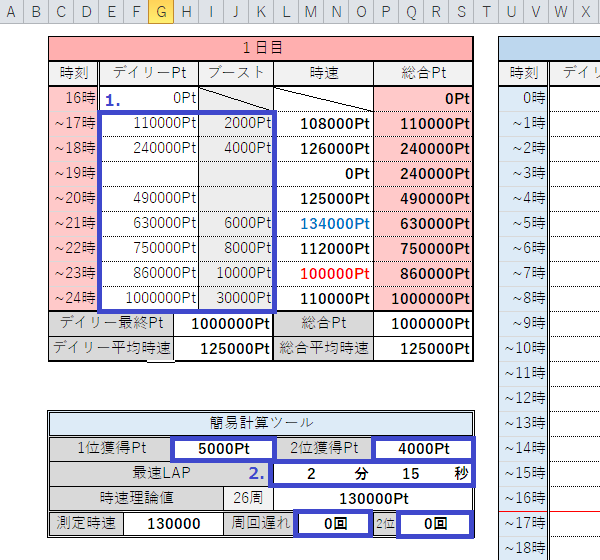

- このツールについて
-
魔道杯におけるポイント管理を効率よく行うためのツール(Excelファイル)です。
当ツールは、こたち(@Kotachi_wiz)さんが開発したポイント管理ツールに機能追加を行ったものです。
- 機能一覧
-
・間近時速・平均時速及び現在の総合Ptを自動で計算します。
・途中(13時など)でも最終結果を出すことが可能です。また、ブースト分は時速に含まれません。
・前時のデイリーに記入漏れがあった場合、空白期間の平均時速が計算されます。
・空白があった場合でもデイリー平均時速及び全体平均時速は正しく計算されます。
・時速理論値、現在のPtから任意のPtに到達するまでの時間を算出することができます。
・全体を通しての時速変動をグラフに表示します(シート2)
- 使い方
-

上の図で青い四角で囲った部分が編集可能な部分です。
1. の部分にその時間でのデイリーポイントおよびブースト使用値を記入します。
2. の部分に1位ポイント、2位ポイントおよび周回ラップを入力することで理論時速を算出します。
また、算出した理論時速と近い値を青く、時速が落ちている場合は赤く色分けして表示することができます。
- 注意点
-
初回起動時に"マクロが無効にされました"と表示されるので、「コンテンツの有効化」を押してください。
二次配布はできません。また、入力が必要なセル以外の編集はできません(保護を行っております)。
その他詳細はReadme.txtをご確認ください。
このツールに関するバグ報告は、@Kotachi_wizか@arika_nekowizに直接お問い合わせください。
(バグ報告欄に記入しないでください)
- ダウンロード
-
最新版が作成者のブログで公開されているので、リンクを貼っておきます。
最新版(外部サイトへ移動)
どちらからダウンロードしても内容は同一です(こちらは旧バージョンです)。
wiztools.net
DropBox